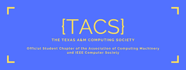
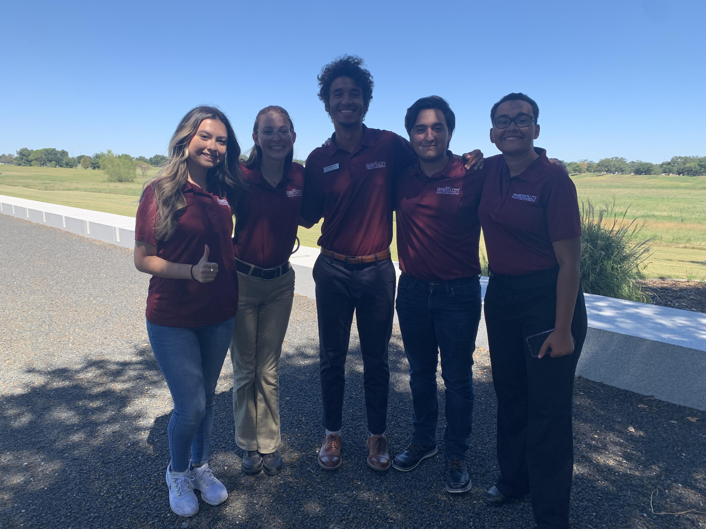
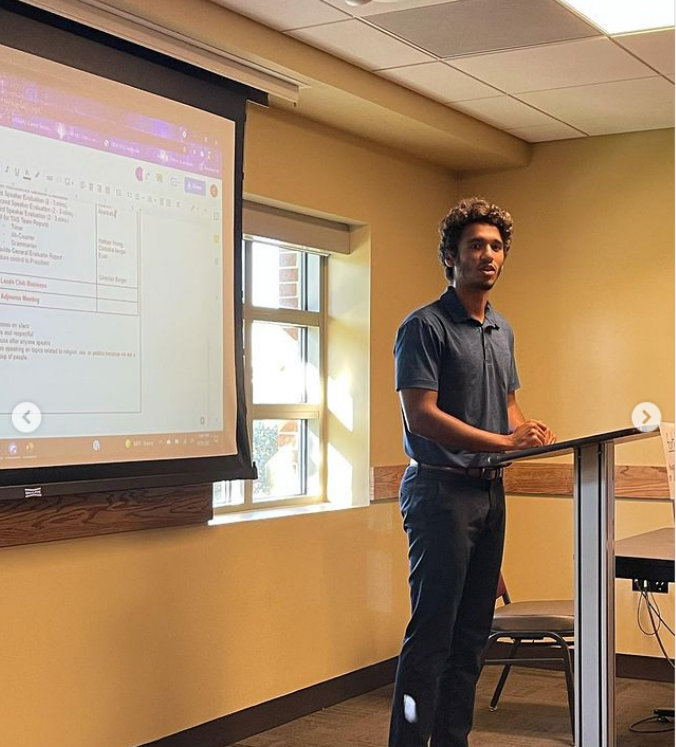

Techinical Organizations
Texas A&M Computing Society - Workshops Officer | Treasurer

Competitve Programming Club - Member

Service
MSC Hospitality - Executive director of tours and traditions

Leadership Organizations
Aggie Toastmasters - President (current) - Vice President (former) - Seargant at Arms (former)
